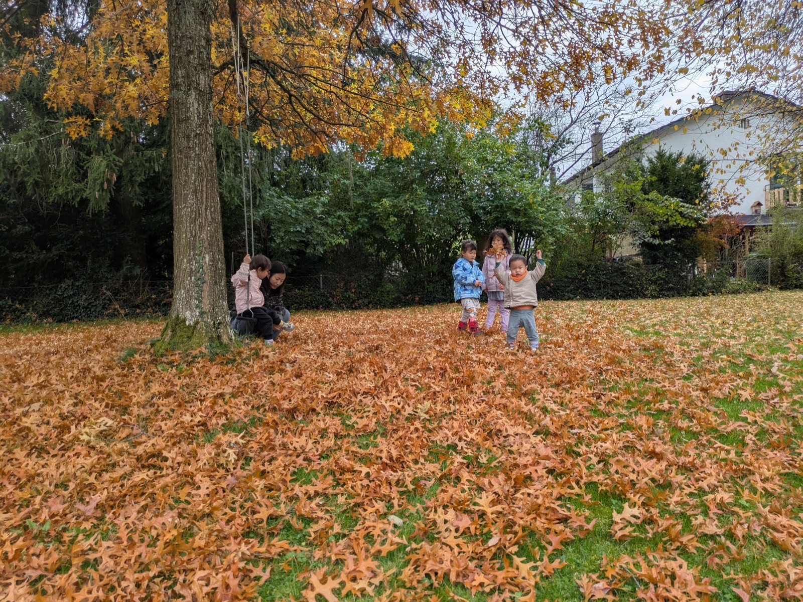

Hier war ich einmal
Ich habe viele Besuche.





Ich kannte jeden Wind, jedes Gras, jeden Wanderer.
Niemand gehörte hier – wir alle waren Teil der Erde.


Ich wurde in die Ecke getrieben.
Die Kinder lachten und riefen noch.
Ich hielt den Atem an,
um die Erde zu spüren.

Jetzt steht hier ein neues Gebäude und ein Schild.
Nur selten hört man noch Kinder lachen.

Es war einmal
der Wind und ich erinnern uns leise.
Ein Fenster-Geschichte
von mir und meiner Tochter.
— Yiyunlin